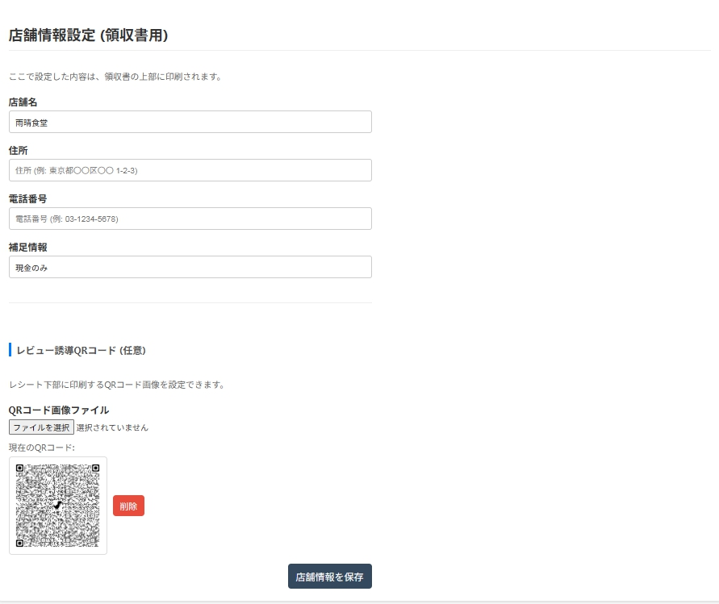
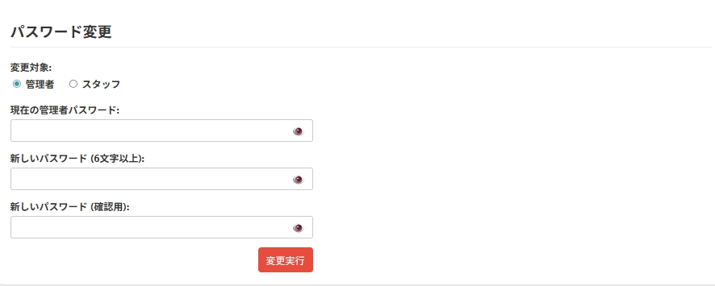

このたびは、地域のお店を応援するオーダー管理システム『Rise』にご関心をお寄せいただき、誠にありがとうございます。
『Rise』は、ITが苦手な方でも、スマートフォン一つで簡単に使えるように設計された、お店のための小さな相棒です。このマニュアルでは、店長・オーナー様ご自身で、お店のメニューを登録したり、設定を変更したりする方法を、一つひとつ丁寧に説明します。
1. ログインと画面の紹介
まずは『Rise』にログインし、管理者だけが使える特別な画面を見てみましょう。
ステップ1：ログインする
提供されたURLからログイン画面を開き、管理者用のIDとパスワードでログインします。

ステップ2：「管理者画面」を選択
ログインに成功すると、役割を選ぶ画面が表示されます。一番下の赤いボタン**「管理者画面」**を押してください。
ステップ3：管理者画面の全体像
これが管理者画面です。ここからお店の全ての設定ができます。画面は大きく分けて「売上分析」「Excel登録」「カテゴリー管理」「メニュー管理」「各種設定」のセクションに分かれています。
2. 初期設定：お店の情報を登録しよう
お客様にお渡しするレシートに印刷される、お店の基本情報を登録します。
店舗情報の設定
管理者画面の一番下にある「**店舗情報設定（領収書用）**」で、お店の名前や住所、電話番号を入力します。「補足情報」にはインボイス登録番号などを記載できます。入力後、**「店舗情報を保存」**ボタンを押してください。
パスワードの変更
セキュリティのため、最初のパスワードは変更しておきましょう。「**パスワード変更**」セクションで、管理者用とスタッフ用の両方のパスワードを変更できます。
3. メニュー管理：お店の味を世界に届けよう！
『Rise』の心臓部、メニューの登録です。一番のおすすめは、使い慣れたExcelでの一括登録です。
3.1. Excelでかんたん一括登録（推奨）
ステップ1：テンプレートのダウンロード
「**Excelから一括登録 / バックアップ**」セクションの**「現在のメニューとカテゴリー設定をダウンロード」**ボタンを押し、テンプレートとなるExcelファイルをダウンロードします。

ステップ2：Excelにメニューを記入
ダウンロードしたファイルを開き、「カテゴリー設定」シートと「メニュー」シートに情報を入力します。
「カテゴリー名(English)」や「商品名(英語)」の欄をしっかり入力しておくことで、外国人観光客のお客様が言語を切り替えた際に英語メニューが表示されるようになります。ぜひ活用しましょう！
ステップ3：画像ファイルの準備
メニューで使う写真は、PCのプロジェクトフォルダ内にある`images`フォルダに入れておきます。
画像ファイルの名前は、必ず**「半角英数字の小文字」**にしてください。（例: `karaage.jpg`, `salad.png`）
そして、Excelの「画像ファイル名」の列には、このファイル名を**大文字・小文字まで含めて全く同じように**入力してください。
ステップ4：アップロード
準備したExcelファイルを「ファイルを選択」ボタンで選び、**「アップロード実行」**ボタンを押せば完了です！
3.2. 登録内容の確認と個別修正
アップロードが成功すると、「カテゴリー管理」や「メニュー一覧」にデータが反映されます。

もし、一部だけ修正したい場合は、各項目の右側にある「修正」ボタンから、いつでも個別に編集できます。
4. POS機能：売上の確認と分析
『Rise』には、日々の売上を手間なく管理・分析するための、シンプルで強力なPOS機能が搭載されています。
4.1. レジでの会計処理
日々の会計は、スタッフ向けマニュアルで解説している「レジ画面」で行います。会計が完了したデータは、自動的にサーバーに蓄積されていきます。

4.2. 売上データの分析
管理者画面の上部にある「**売上分析**」セクションでは、蓄積された売上データを様々な角度から確認できます。
- 期間の指定: 確認したい期間の開始日と終了日をカレンダーから選択します。
- 「この期間で表示」ボタン: ボタンを押すと、指定した期間の売上データが表示されます。
データは、以下の4つの視点で並べ替えることができます。
- 時系列: 注文が入った時間順に、全ての注文履歴を表示します。基本的な売上の流れを確認するのに便利です。
- テーブル別: テーブル番号順に並べ替えて表示します。どのテーブルがどれくらいの注文をしたかを確認できます。
- 商品別: どの商品が、期間中に合計でいくつ売れ、いくらの売上になったかを集計して表示します。人気メニューや、逆にあまり出ていないメニューが一目でわかり、メニュー改善の大きなヒントになります。
- 滞在時間: お客様のテーブル利用開始から会計までの時間と、その会計金額を一覧で表示します。客席の回転率などを分析する際の参考にできます。
分析結果の右下には、指定した期間の**合計売上**も自動で計算・表示されます。
5. その他の設定
オープニング画面設定
お客様がQRコードを読み取った際に最初に表示される、お店のウェルカム画面を設定できます。美しい風景写真や、お店のロゴなどを設定して、お客様をおもてなししましょう。

6. 運用について
サポートについて
『Rise』は、地域の事業者を応援するための非営利プロジェクトです。そのため、専門のサポートスタッフによる電話対応や、お店に直接お伺いしての対応（オンサイトサポート）は行っておりません。操作にご不明な点があれば、いつでも開発者にご連絡ください。一緒に解決策を見つけましょう。
モニタリング費用について
このシステムを継続的に維持・改善していくため、大変心苦しいのですが、以下の通りシステムのモニタリング費用（食事券）のご協力をお願いしております。
- 毎月の売上が50万円未満の場合: 3,000円分のお食事券
- 毎月の売上が50万円以上の場合: 売上合計の1%に相当する額のお食事券
これは、開発者が実際にあなたのお店に伺い、お客様として食事をし、システムの稼働状況を体感させていただくための大切な費用です。ご協力のほど、何卒よろしくお願い申し上げます。